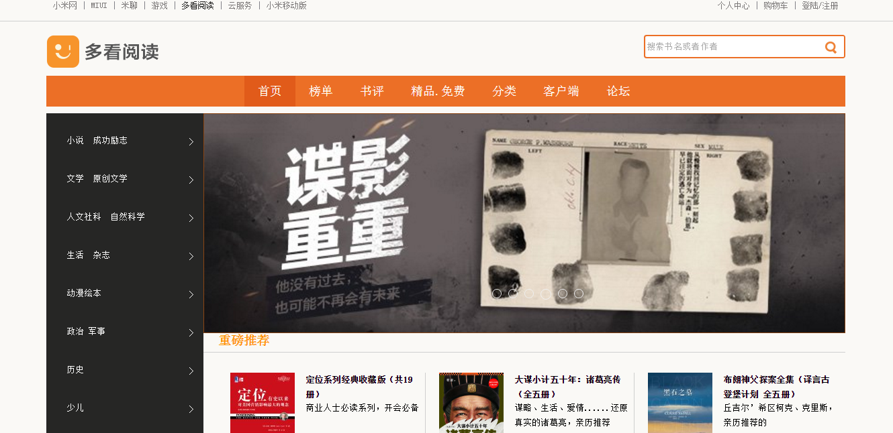

邵文磊
WebShao
一生行走于代码
我的信息
- 意向职位：
- 前端开发
- 期望待遇：
- 面议
- 现居住地：
- 浙江省杭州市
- 专 业：
- 机电一体化
- 学 历：
- 专科
- 电 话：
- 15700072539
- 邮 箱：
- 15700072539@163.com
- Q Q：
- 925364059
我的心得
- 个人网站:
- https://webshaowenlei.github.io/
我擅长的
- 精通HTML+CSS布局，遵循W3C规范，编写有语义化、模块化的页面代码
- 熟悉JavaScript,运用jQuery工具库，实现日常交互效果,契合最优用户体验
- 熟悉 Html5 以及 CSS3.0 的新特性,例如边框圆角,阴影,video 等
- 熟悉 bootstrap 框架，实现页面的响应式布局和相关组件运用
- 熟悉AJAX同步和异步请求数据、JSON数据解析
- 了解前端框架设计和封装,会自己封装一些简单的CSS动画框架和JS框架
- 了解 AngularJS框架,自己尝试过对照他们搭建小型的框架
- 熟悉前端自动流
- 了解ionic
- 熟练使用webStorm，Sublime，Fireworks等开发工具
我的项目



仿多看阅读
简介：还原包括首页,登陆,购物车,个人中心等页面样式以及特效
主要运用技术：HTML+CSS+JavaScript